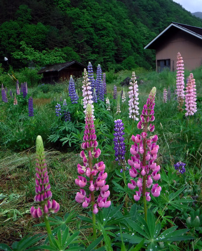
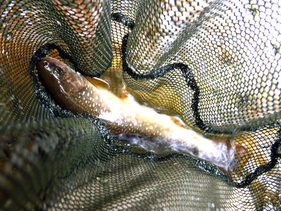
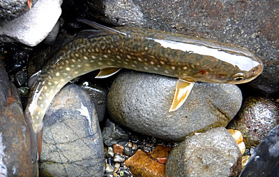
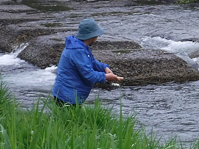
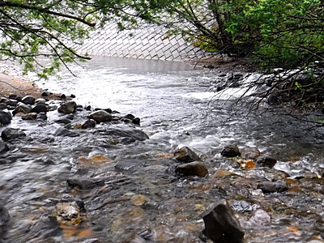

釣行日誌 故郷編
2019/06/09 昇り藤（ルピナス）の花に寄せて
今朝は家庭菜園の草取りが７時からあったので、精を出して雑草を抜き取り、１時間ほどで畑仕事を終えた。釣り支度をして待っていると、８時半に叔父がいつものように駐車場まで迎えに来てくれたので、大荷物をドッコイショとトランクに積み込む。
僕の住んでいる町からホームグラウンドの釣り場までは、高速を使わずに下道を延々と走って約４時間ほどかかるのだが、
「のんびり行っても釣れる」
というのが実力派の叔父の持論なので、こっちとしては気が急いているが、叔父の運転に任せ、シートを倒してウトウトする。
街道沿いのコンビニで昼食と入漁券を買う。いつもお昼と夕食は叔父がおごってくれるので、自分の欲しいおにぎり３個とお茶を叔父の持つ買い物カゴに入れ、僕はトイレに向かう。車に戻ると叔父が
「ホレ、今日の入漁券。」
と言って日釣り券をくれた。
「あれ？叔父さん入漁券買っちゃったの？！ 俺こないだ来た時に年券を買ってたんだよ。」
「あっそうだったか！」
ということで僕がコンビニのおばさんに頼んで返金してもらって戻った。
「そういやぁ年券買ったとか言っとったなぁ....」
「そうだよ。だから今年は最低５回は通ってモトを取るんだ。」
「お前、今年は気合が入っているなぁ...」
と笑った。今日で今シーズン２回目なので、あと３回は釣りに来ないと年券を買った意味が無い。（笑）
幹線国道から山間の県道に入り、トンネルを抜けていつもの里へ出たところで叔父と相談する。作戦会議の結果、今日はパターンを変えて、水量の多いこちらの里川から先に攻めることにした。集落の中の農道をのんびり走ってゆくと、あちらこちらでルピナスに良く似た美しい花が満開で出迎えてくれた。

実は、僕にとってルピナスは、とても深い想い出のある花なのだ。1990年代前半、いちおうは会社員となってそれなりにフトコロも温かかった僕は、読めもしないくせにアメリカの雑誌「Fly Fisherman」を購読しており、ある号の表紙が、ルピナスの乱れ咲く野原の中を流れるスプリングクリーク、ニュージーランド南島のどこかの美しい川の風景だったのだ。以来、ニュージーランドに心を奪われた僕は、1997年に念願のニュージーランド釣行を果たすまで、そのルピナスの川が折にふれて目に浮かぶようになっていた。
実際には、1997、98年の釣行、99～2002年の留学時代を通じて、ニュージーランドで実際のルピナスを見ることは無かったが、今こうしてこの里川沿いの集落でこの花に出会うと、あの頃の熱い想いがありありと胸によみがえってきた。
いつもの橋詰の空き地に車を停め、はやるココロで身支度を整える。叔父は橋の上手の堰堤を攻めてみると言うので、僕は例によって橋の下流にある堰堤のプールを目指す。リンリンシャンシャンと熊よけ鈴を鳴らしつつ農道から小径を降りて藪を抜け、大きな水音を立てている堰堤の落ち込みに足を進める。さすがに藪に踏み込む時には熊よけ笛を思いっきり吹きまくった。さすがに出会い頭はコワイからネ。
橋の下の堰堤には、洪水時に川底が水流の力で掘られないように無数のコンクリートブロックが敷き詰められている。いつもなら無造作にひょいひょいとその護床ブロックに上がって、おもむろに深みへとルアーを投げ込むのだが、今日はいつになく慎重なアプローチを取るほうが良いゾ...と虫が知らせてくれた。
小径の端に立ち、泡立ちながら深みへと流れ込む水流に足を入れないように注意しつつ、ワンパターンのドクターミノー・フローティングを深みに投射し、ちょんちょんとアクションを付けつつ引いてくる。すると真ん中の深みの底から追ってくる魚影が見えた。
『出たなっ！』
しかし、乗らない。アタリもしなかった。今度はブロックすれすれを引いてみる。するとブロックの影で白い魚影が反転した。こいつもヒットしなかったが、あの魚体の色はおそらくイワナだろう。
降り口のポジションからは探り終えたのだが、いつもなら１尾はヒットしてもよい所だが、今日はだめだった。いよいよブロックの上に登り、激しい勢いで深みへと流れ出す主流の筋めがけて遠投する。ごくごくゆっくりとリーリングして、かなり長いポーズを入れながら引いてくる。アクションは水流任せである。右岸の灌木の茂みが主流に覆いかぶさっているあたりでコツンと反応があり、今日初めての１尾がブルブルと身を震わせながら寄せられてきた。可愛いサイズのイワナである。それでも流れを利用して抵抗するのでなかなかの引きを見せた。（笑）
慎重にランディングして、写真を撮った。

立ち位置が変わったので、別のアングルから流せばまた出るかも？と思い、奥のコンクリートを狙って引いてみると、ブロック下から再び魚影が見えた。
『ははぁ、やっぱりあそこでしたか....。今度は喰うかな？』
シンキングに結び替えて遠投すると、いつものフローティングよりも重いので飛び過ぎて、対岸の擁壁に激突させてしまった。跳ね返って水中に落ちたミノーを引っ張り、さっきのブロック下を通してみたがもはや反応は起こらなかった。
『クゥ～！ 残念！』
今日はなかなか渋いなぁ...と悔しがって、なおもしつこくあたり一面に探りを入れてみたら、遠くの瀬尻で可愛いのがヒットして、ピクピクと身を震わせながらネットに収まった。大きさは物足りないが、まずまずの出来だろう。
黒い毛のイキモノに対する恐怖心を再び笛の音で吹き消しながら、もと来た小径を登り、藪を抜ける。
橋のたもとの車まで戻ってみると、叔父はまだ上流の淵を攻め続けている。
『ははぁ、大きいのでも見えたかな？』
ただ待っていてもしょうがないので、この時間を利用して美しく咲いているルピナスの群生をカメラに収めようと、近所の畑まで散策にでかけた。
思い切り花に近づいてマクロモードで連射していると、近所の農家のおばさんらしき女性が姿を見せた。
「こんにちは！ 綺麗に咲きましたねぇ！ ルピナスのように見えますけど、何という花ですか？」
「ああ、ルピナスですよ。この辺じゃ皆、”昇り藤” と言ってますがなぁ」
「ははぁ、昇り藤ですか。そう言われてみると、藤の花を逆さにしたように見えますね。あちこちに咲いていますけど、ご近所のみなさんが植えられたのですか？」
「ああ、この花はひとりでに増えていきますで、今じゃこんなに部落じゅうに咲くようになりましてなぁ」
などと人の良さそうなおばさんとおしゃべりを楽しみ、振り返ると叔父が車に戻っていたので、こちらもおばさんにお礼を述べて、車に引き返す。
「どうだった？」
「おお、あの上の淵で初めて釣ったぞ！」
「えっ！？ あそこで出たの？」
その淵は、もうかれこれ10年近くこの川に通っている僕たちが、来る度に竿を出しているのだが、２人して１尾も釣ったことが無いポイントなのであった。
「あんまり大きくはなかったけど、綺麗なイワナだったぞ。」
「へぇ～。やってみるもンだねぇ.....」
何が起こるかわからないのが魚釣りの面白さ、不思議さ、怖さである。
さて、毎度おなじみ、めぼしいポイントの「拾い釣り」、今どきの言葉なら "Run & Gun" となり、下流へ移動しいつもの「爆釣の淵」から下流を攻める。叔父はこの淵を得意としているのだが、僕はあまり成果が出ていないので、そこの下流の荒瀬の流れ込みを狙った。この頃、鈍い色の空から雨粒が落ち始めた。
例によって上流からフローティングミノーを遠投し、長いポーズ、わずかなトウィッチを繰り返しながらゆっくりリーリングしてみる。
「カツッ！」
可愛いアタリで上がってきたのはちびっ子イワナ。ネットを構えた瞬間にフックが外れ、河原の濡れ石の上に落ちた。跳ね回りもせずじっとしているので、すかさず写真を撮らせてもらってから流れに戻した。

さらに釣り下ってゆくと、だいぶ下の瀬で１尾釣れた。こちらもカワイイ大きさだった。まだまだ良さそうな区間は長く続いているが、叔父の所へ戻り、２人して再度車で移動する。
牧場脇の堰堤下を攻めてみたが、渓相は良いのに何故か、出ない。またまた移動してかなり下流へ移り、橋下の淵を攻める。ここでも沈黙。

あまりやったことのない牛小屋の上流を攻めるが、反応は皆無。そろそろ切り上げ時かな？ということで、昔行ったことのある馬小屋の対岸を偵察してから、僕たちの「鉄板ポイント」となっているバス停のポイントから最終ラウンドに臨む。
叔父と二手に分かれ、僕は少し上流に歩いてから草むらに分け入って「オジさんの淵」へと降りてゆく。藪に囲まれた小さな淵を狙い、苦労してミノーをキャストしてみるが、ここでも魚の気配は無かった。

午後６時を回っていたので、今日はこれで納竿、と決め、叔父の所へ戻る。叔父にもアタリは無かったそうだ。
濡れた釣り支度を脱いで乾いたズボンを履くと、ずいぶん楽になった。
おしゃべりしながら遠距離ドライブにて家を目指す。帰りの運転は僕の番である。国道沿いのガストで夕食として、あとは交通量の少ない夜道をのんびり走る。
城址のある峠を越えてゆく時に、その城主の話となり、叔父が繰り出す歴史の話で車中が盛り上がった。彼の中学生時代、歴史の先生が南北朝時代のエピソードを話してくれた時、
『そんな大昔の誰それのことを今頃勉強してもなぁ.....』
と叔父がつぶやいたのを耳にしたその先生は、
「いいか、歴史を学ぶことの本当の意味とは、他人の生き方を学ぶことを通じて、自分の生きる道を学ぶことなんだぞ。」
と宣ったそうである。
『なるほどなぁ.....』とうなづきつつ、暗闇の中、車を走らせる。
家に着いた時には日付が変わり、午前様の帰宅となった。今日も楽しい釣りができた。
釣行日誌 故郷編 目次へ
サイトマップ
ホームへ
お問い合わせ